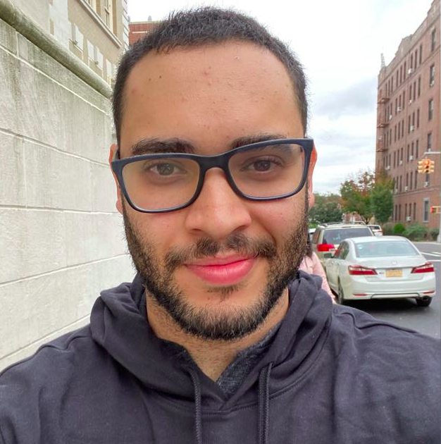

<!DOCTYPE html>
<html lang="pt-br">
<head>
    <meta charset="UTF-8">
    <title>Portfolio</title>
</head>

<body>

<!--     <h1>
        Renan Carmo Menezes
    </h1>

    

    <h2>
        Sobre mim
    </h2>

    <p>
        Engenheiro civil realizando um "plot twist" para dev, porque isso? fiz um curso <strong>Tecnico de Informatica no IFSP em 2010</strong>, apos o curso fiz <strong>Engenharia Civil</strong> e esse ano no meio do semestre (08/2021), acabei ingressando em <strong>Analise e Desenvolvimento de Sistema no IFSP</strong>, percebi que precisava acelerar a minha carreira e encontrei a <strong><em>luz ou melhor dizendo </em>Trybe.</strong>
    </p>

    <h2>
        Minhas habilidades
    </h2>
   
    <ul>
        <li>Determinacao;</li>
        <li>Resiliencia;</li>
        <li>Dedicacao;</li>
        <li>E muito mais...</li>
    </ul>

    <a href="">Segura essa foto!</a>

    <h2>Meu portfolio</h2>

    <p>Em construcao</p> -->
    
</body>
</html>
